ЭПИЛЕПТИК
Эволюция многоклеточных
По случаю закрытия фестиваля «Коммиссия», сегодня очередной раз про комикс. Мне тут оказали честь, предложив поучаствовать в судействе конкурсных работ. На мой взгляд самые интересные вот:
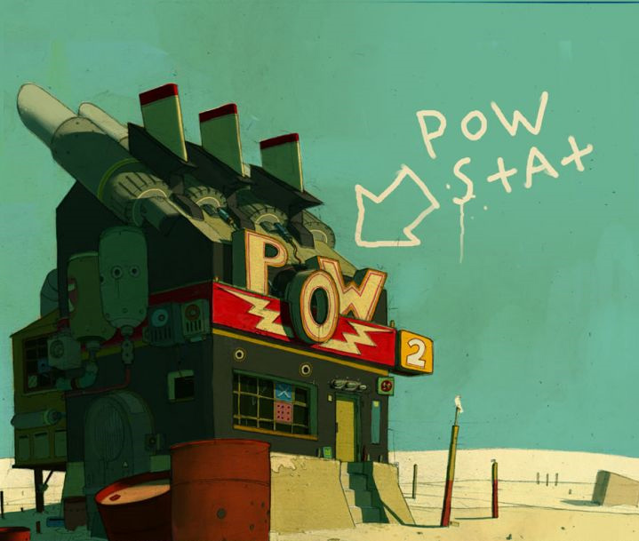
Рома Соколов, «берегите голову»
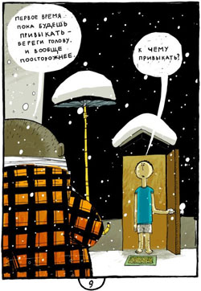
Лена Ужинова, «коллекция фетишиста»
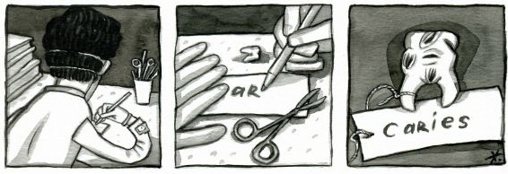
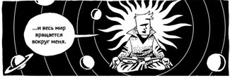
Игорь Баранко, «Шпионские сети»
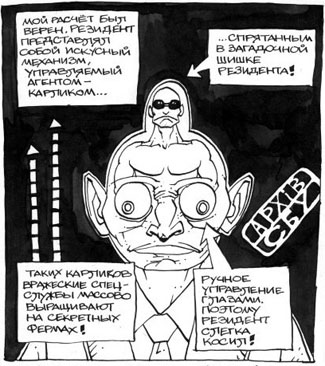
Вообще все понемножку меняется. Вот наступил день, когда популярнейший московский журнал Афиша – с необходимыми реверансами, само собой – рецензирует графический роман среди обычных. (потом был еще один, который стоило рецензировать только потому, что это графический роман и он – у нас – вышел. Там же можно почитать про «Комиксы для людей, которые думают, что они ненавидят комиксы» – довольно однобокий список, на мой взгляд, хотя перечисленные вещи вполне заслуживают внимания).
Watchmen – книга заслуженная и мощная, но я, откровенно говоря, не вижу веских причин (ох будут бить) не поменять ее на кинофильм – времени занимает меньше, выглядит современнее (я вот на «цветовое решение» оригинального комикса просто не могу смотреть; чтобы прочесть, пришлось распечатывать на черно-белом принтере), шибает сильнее, формалистские ухищрения с зеркальными главами и прочее благополучно идут лесом.
Отлично сделан и сыгран Роршах. Впрочем, он и в оригинале выдающийся. Даже зная, кто будет его играть и что произойдет, когда с него снимут маску, я все равно сбивался с дыхания при мысли о том, что увижу это в кино. Единственное, что самую злую сцену – вот эту – зачем-то променяли на обычную голливудскую истерику.
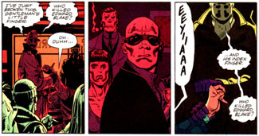
Но я отвлекся. Вообще Комикс – искусство с совершенно самостоятельным инструментарием, и мне кажется, что использовать он научился дай бог половину. При всех ее (книги) неоспоримых достоинствах, я не считаю watchmen революцией в комиксе. Самые эффективные революции делаются незаметно.
Сейчас меняется, как я уже заметил выше, само отношение к комиксу. Безотносительно усиленного внимания к этой культуре со стороны американского кино, стали просто появляться романы нового поколения – толстенные тома, уже вообще никак не связанные с приключениями или супергероями.
К примеру, «Черная дыра» Чарльза Бернса – уже упоминал про него.
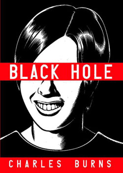
По разговорам, подслушанным в зарубежных комик-шопах, эта книга – мерило Настоящего Комиксного Гика. Нормальные люди такого не читают. К слову, он же рядом с Лоренцо Маттотти сделал одну из новелл в фильме «страх темноты»- там потрясающе визуализирован в трехмерной анимации вот этот его колючий стиль.
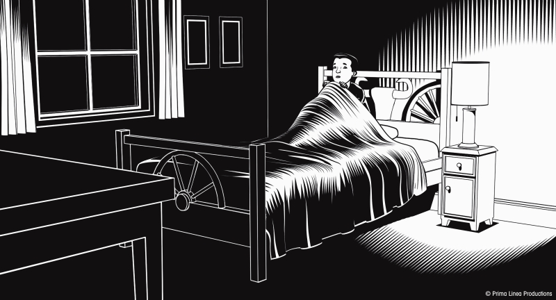
Так вот, из всего, что я видел, дальше всего в работе со специфическими инструментами комикса зашел роман Дэвида Б. «Эпилептик».
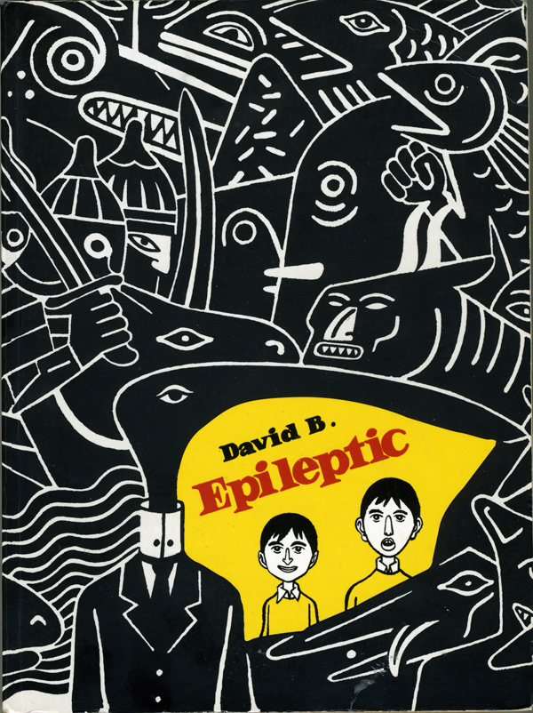
Я знаю, многие не любят словосочетание «графический роман», но тут деваться некуда – большая литература, на три пальца в толщину, но не отпускает до конца. Притом это автобиография, в принципе довольно опасный жанр. Пронзительнейший рассказ про жизнь, семью, поиск себя, творческий рост, физическое и душевное здоровье.
Но самое интересное (по крайней мере, в рамках этой колонки) – это собственно графика, а вернее, ее развитие. История довольно простая. Вначале мы видим более-менее обычную французскую семью с непроизносимой еврейской фамилией на Б, довольно весело нарисованную. В какой-то момент у старшего сына начинаются эпилептические припадки. Рассказ ведет младший, сам Дэвид Б. Родители пускаются в бесконечное путешествие по франции в поисках лекарства, которое подействовало бы. Появляются и исчезают толпы выразительных докторов, диетологов, целителей и прочая.
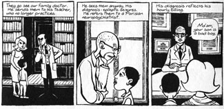
Причем если кто-то из персонажей кажется героям похожим на кота, то дальше он фигурирует уже в качестве кота.
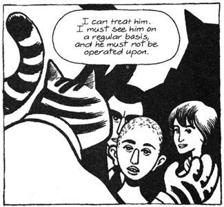
К истории присоединяется все больше странно выглядящих персонажей, а также призраки умершего дедушки (это его клюв на обложке), героев прочитанных книг, черта с рогами. Болезнь тоже персонифицируется.
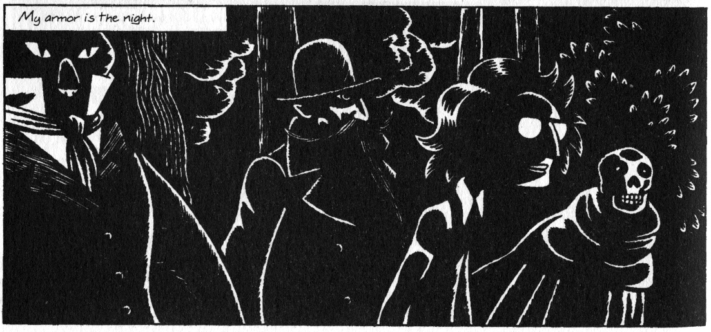
При этом, по мере того, как сам эпилептик срастается с болезнью и теряет всякое желание вылечиться, младший лелеет собственных тараканов и постепенно – это тоже видно шаг за шагом – развивается как художник. Тут, к слову, подтверждается мое давнее подозрение: самые сильные рисовальщики – те, кто уже в детском саду портит бумагу погонными метрами. Этот, вдобавок, заполнял их подробнейшими картинами разнообразных битв.
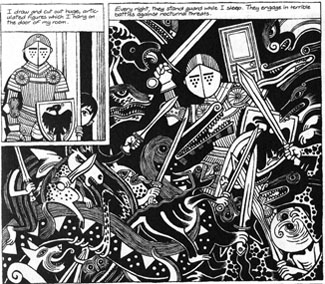
Под конец от более-менее вменяемого нарратива, с которого начинается роман, не остается и следа.
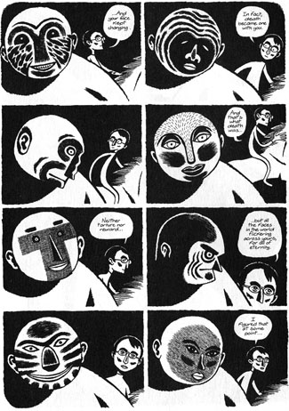
Обычные люди вытесняются разного рода чудовищами. Главные герои меняются до неузнаваемости – на этом, к слову, построен один из самых сильных моментов романа. Ни в анимации, ни в кино, ни в обычной литературе такого сделать нельзя. История развивается в плоскости именно графической, причем почти незаметно – если бы книга весила на полкило меньше, это не сработало бы.
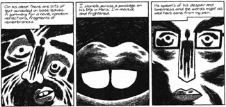
В общем, настоятельно рекомендую найти.
Про самого Дэвида Б. (и многих других) можно почитать вот тут.
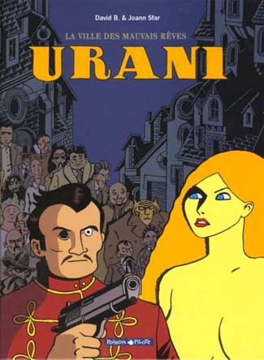
Мариан Сатрапи, автор популярного романа «Персеполис» (многие видели мультфильм) – его непосредственная ученица. По работе с черным и белым «Персеполис» похож на «Эпилептика» как родная младшая сестра – и по всем статьям дотягивает ему примерно до пояса. При том, что история девушки под колесами Иранской Исламской Революции предлагает, казалось бы, на порядки больше визуального и нарративного богатства, чем история отдельно взятого больного подростка.
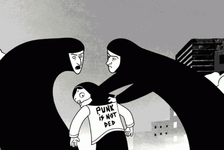
К слову, в книге фигурирует учитель самого автора Жорж Пишар,
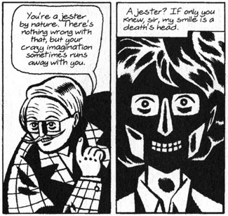
– довольно важная личность в истории эротического комикса, такой французский Харви Курцман, с уклоном в БДСМ.
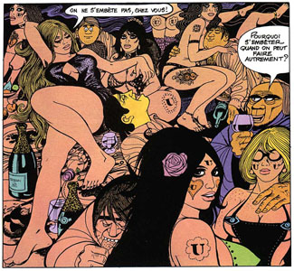
Так вот, чтобы подытожить. То, что принято называть золотым веком комикса – ну, у человечества тоже был золотой век, знаете. Настоящий золотой век комикса – впереди, но уже вот-вот. Страшно подумать.
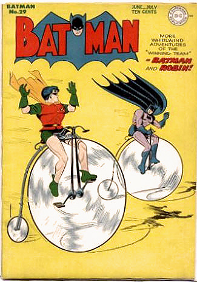